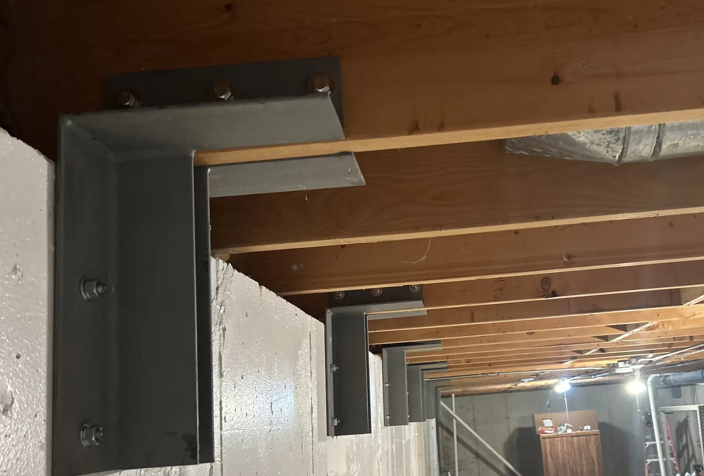
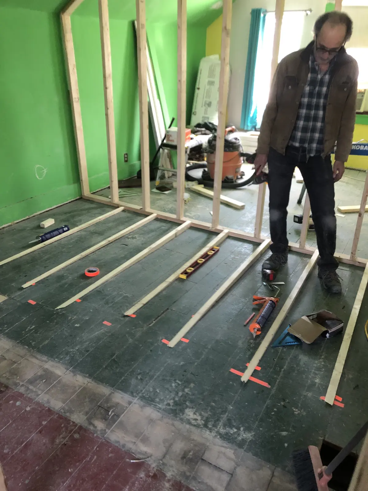
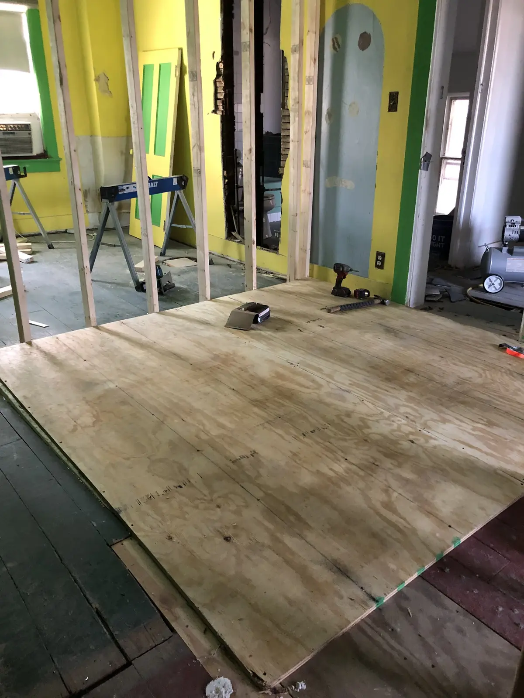

Structural Repairs & Structural Carpentry in Chicago
Old houses have problems. Most of them have solutions.
Sloping floors. Sagging joists. A beam that needs to be reinforced or replaced. A load-bearing wall that stands between you and the layout you want. A two-flat you want to convert into a single-family home. Or, sometimes, the discovery that someone renovated your house before you bought it and made a structural decision they should not have made.
Paro Projects handles structural repairs, structural carpentry, framing modifications and engineer-designed structural work throughout Chicago, with a focus on the North and West Sides and nearby suburbs.
We work on old houses all the time. Chicago's bungalows, frame houses, two-flats, greystones and other century-old buildings have settled, shifted, been added onto, remodeled, repaired and occasionally mistreated by generations of owners and contractors. A floor that slopes does not tell you, by itself, what needs to be done about it. Neither does a crack in the plaster.
Our approach is keep calm and carry on.
We consider the worst-case scenario because structural work deserves that level of care. Then we figure out what is actually happening, what the house needs, and what it doesn't.
That distinction matters.
We don't sell structural work based on fear. We don't assume that every crooked floor needs to be made perfectly level or that every old-house irregularity represents an emergency. Many of these houses have been standing for more than a hundred years. The goal is to understand how the structure is behaving, identify what poses a problem, and design a repair that makes sense for the house.
Structural Problems We Work On
Homeowners often call us about:
- Sloping, sagging or uneven floors
- Sagging, cracked or damaged floor joists
- Structural beam repair, reinforcement and replacement
- Steel beam and LVL beam installation
- Load-bearing wall removal
- Open-floor-plan renovations
- Structural framing for kitchen and whole-house remodels
- Two-flat to single-family conversions
- Layout changes in older Chicago homes
- Foundation wall reinforcement and stabilization
- Structural problems uncovered during a renovation
- Improper framing or removed load-bearing walls from previous remodels or flips
- Structural repairs identified during a home inspection
- Repairs needed before putting a house on the market
- Structural questions that come up after buying a fixer-upper
Sometimes the answer is a new beam. Sometimes it is sistering joists, adding posts or rebuilding part of the framing. Sometimes the house needs steel. Sometimes an alarming-looking condition turns out to need a much smaller intervention.
The point is to find out.
Working With a Chicago Structural Engineer
Most of our structural work is designed by Michael Cook, a structural engineer who runs Spring Line Engineering here in Chicago.
There's no formal partnership between our companies. We just call him a lot.
Cook is from the neighborhood, he's smart, and he's practical about what a house actually needs and what a homeowner can actually afford. He's not going to spec more steel than a foundation requires, and he's not going to tell you a floor needs to come out perfectly level when the house has been fine, slightly crooked, for a hundred years.
When we run into a load-bearing wall someone wants gone, a foundation that's moving, or a floor that's sloping for reasons nobody can immediately explain, Cook is who assesses the structure, works out what's actually happening, and stamps the plans. We build what he designs.
Both case studies on this page — the foundation wall reinforcement and the sloping floor repair in Rogers Park — were engineered by Cook.
Structural Work in Action
Foundation Wall Reinforcement Before a Home Sale

A homeowner in the Chicago suburbs had lived in his house for more than thirty years. He was the original owner and was preparing to sell the house and retire when a serious foundation problem came to light.
The basement walls were moving inward. The problem traced back to the way the foundation had been built in the 1980s.
For the homeowner, the timing could hardly have been worse. A major structural defect discovered before a sale can mean a delayed listing, difficult negotiations with buyers, or a substantial loss in value.
Michael Cook assessed the foundation and designed a repair around the house that existed rather than defaulting to a much larger reconstruction. His solution called for 22 custom steel reinforcement brackets.
Cook brought Paro Projects onto the job to execute the design.
Through our network of Chicago-area tradespeople and fabricators, we found a local metal shop that could manufacture the brackets within the week. Once they were ready, Paro Projects installed the complete reinforcement system over the course of a few days.
The installation passed inspection, and the homeowner was able to move ahead with the sale without waiting through a major foundation reconstruction. Instead of entering the market with an unresolved structural defect, he could show buyers an engineer-designed, inspected structural improvement.
The cost of the repair was small compared with the value it protected.
This is the kind of structural work we like.
A problem that looked capable of derailing someone's plans became a defined engineering problem, a set of drawings, 22 pieces of steel and a few days of work.
Good structural work combines engineering with practical knowledge of how buildings are put together. In Chicago, it also helps to know the old housing stock, the local trades and fabricators, and who to call when a custom piece of steel needs to exist by next week.
There is no benefit to adding fear, hype or unnecessary work to the equation. We would rather understand the problem, build what the engineer specifies, and let you get on with your house.
Where
Chicago suburbs, 1980s build
Problem
Bowing foundation walls
Brackets
22 custom steel
On Site
A few days
Leveling Severely Sloping Floors in an 1890s Rogers Park Worker’s Cottage
The clients had recently purchased an 1890s worker’s cottage in Rogers Park and were undertaking a full gut renovation. Upstairs, the floors sloped so dramatically that the bedroom doors would no longer close.
The first question with a sloping floor in an old Chicago house is always: Why?
So we brought in our structural engineer, Michael Cook of Spring Line Engineering.
His assessment, delivered with good humor, was: “We don’t know.”
That was not as alarming as it sounds.

The second-floor joists ran in one long span through much of the house — farther than we would expect contemporary dimensional lumber to span without additional support. But these were old-growth floor joists, and there was no clear evidence that the wood itself was failing.
The house was also more than 130 years old. Like many Chicago worker’s cottages, it had settled, shifted and been altered in ways we could only reconstruct in pieces.
Chicago’s nineteenth-century houses were built during a period of enormous growth, often by skilled carpenters and tradespeople working with old-growth lumber from the forests around the Great Lakes. The result is a housing stock that can be remarkably durable and, from time to time, structurally puzzling.
First, we tried the obvious solution.
Because this was a full renovation, we were already installing engineered headers on the first floor to create new openings and change the layout. Working with Cook, we added support beneath the low area of the second floor and raised it a small amount to see how the floor would respond.
It didn’t.
The floor remained crooked.
We checked it, laughed, ate lunch and reconsidered the problem.
This is part of working on old houses. Engineering matters, but a 130-year-old building is also the accumulated result of original construction, decades of settling, previous renovations and decisions made by people whose reasoning is no longer available to us.
Once Cook had established that the floor structure was sound, the question became much simpler:
How do we give the homeowner reasonably level floors?
A Carpenter, a Pile of 2x4s, and a Better Idea
After lunch, one of our favorite carpenters, Jim Dorling, came back upstairs with a solution.
Rather than forcing the old structure into a position it had not occupied in generations, we could correct the finished floor from above.
Jim measured the slope across each room, worked out the change in elevation and ripped a series of 2x4s into long, tapered shims. Each shim compensated for the floor beneath it.

We installed the shims over the existing structure and laid a new subfloor on top.
Both bedrooms now had reasonably level floors, and the doors could close.
Because the rooms began at different elevations, leveling them independently left one bedroom slightly higher than the other. We designed a simple wood threshold between them so the transition felt intentional and belonged in the house.
No attempt to jack a 130-year-old house back into theoretical perfection. No unnecessary reconstruction.
The structure had been evaluated by an engineer. The floor joists were sound. The clients needed safe, comfortable floors that worked.
So that is what we built.
Fixing Uneven and Sloping Floors in an Old Chicago House
Sloping or sagging floors can come from foundation movement, damaged or undersized floor joists, long spans, removed load-bearing walls, water damage, previous renovations, or several conditions at once.
Sometimes a crooked floor is evidence of a structural problem. Sometimes it is the record of a house settling into itself over a century.
You have to know which one you are dealing with before deciding how to fix it.
For this Rogers Park house, the right solution came from structural engineering, experience with old Chicago houses and resourceful carpentry. The clients got reasonably level bedroom floors and peace of mind without paying us to solve a structural problem they didn’t have.
Where
Rogers Park, 1890s cottage
Problem
Severely sloping 2nd-floor bedrooms
Fix
Tapered shims + new subfloor
Result
Level floors, doors close again
Have a Structural Question?
Tell us what you're seeing — a sloping floor, a cracked beam, a wall you want gone — and we'll help you figure out what it actually needs.